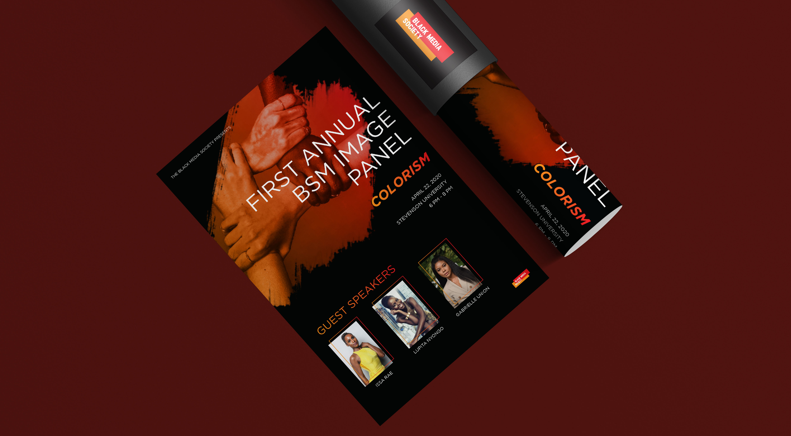

Black Media Society
This was a senior capstone project about the importance of Black representation in the media and how it affects one's self-love/self-esteem. The project focuses on colorism in the media. For the proposed solution, I created an organization called the Black Media Society which targets on changing Black media representation positively. One of the ways of doing that is organizing a panel where members can create conversations about the problems that Black people face in the media. I used HTML/CSS to create a website for the event.
My role
- Branding | Web-design
Tools I use
- Illustrator | Dreamweaver